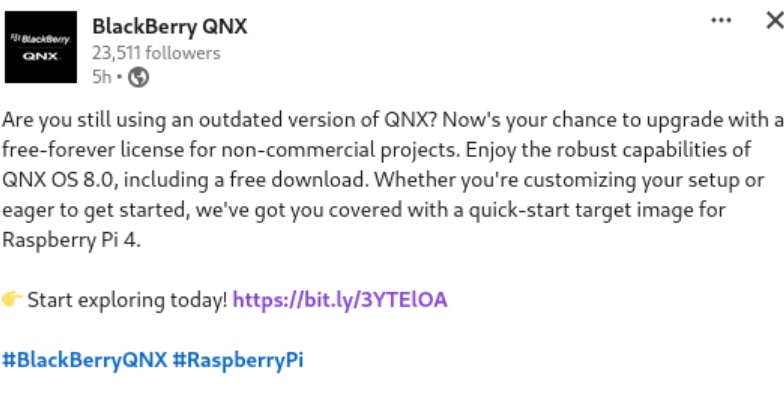
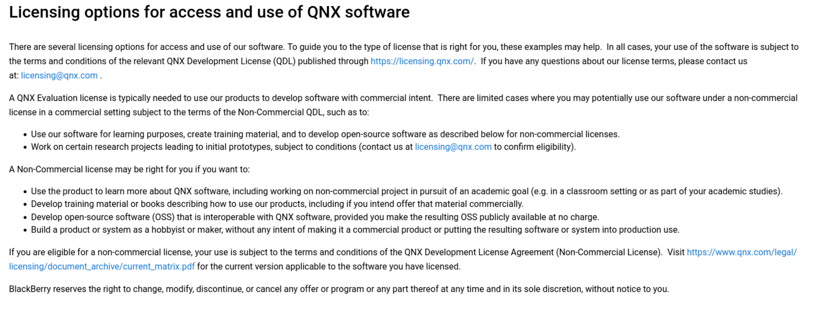
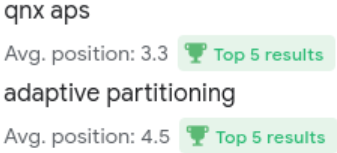

Recently on Hackernews, a relations developer from QNX announced that QNX is now free for anything non-commercial. QNX also made an annoncement to the LinkedIn Community as well which was where I learned about it. For those who are not familiar with QNX, QNX is a properiety realtime operating system targetted for embedded systems and is installed in over 255 million vehicles. QNX has a great reputation for being reliable and safe embedded system to build software on top of due to its microarchitecture and compliance to many industrial and engineering design process which gives customers the ability to certify their software in safety critical systems more easily. What makes QNX appealing is a discussion on another time but for me, this is a good opportunity to fiddle around with the system. I was previously denied a license from my university who had an agreement with QNX and my attempts to get an educational license did not go far years ago.

Previously to gain access to QNX, one would have to either purchase a commericial license from QNX or have an academic license. This made hobbyists from having access to the operating system. With the non-commericial license, QNX is now open for those who are interested in running a RTOS in their hobby projects and for open source developers to port their software on QNX. QNX is a POSIX compliant software but as QNX was not open for public use, companies had to port open source projects into QNX such as ROS (Robotics Operating System which isn’t an actual OS). QNX also mentions the non-commercial license allows one to develop training materials and books on utilizing QNX which is frankly scarce outside of QNX authorized materials (i.e. QNX training, Foundary27, and QNX Documentation).

While the announcement is welcoming news for me who would love to tinker around, this is yet another product entering the hobbyist community late. The reason for the success of UNIX, Linux, RISCV, and ARM is the ease and availability of the product to hobbyists and students who later bring this to their workplace or make the product better. Closing access to technology is a receipe for disaster in the long-term in terms of gaining market advantage. This is exactly the reason why we see cloud corporations enticing either the student or the hobbyist population to have free (limited) access to their products and even at times sponsor events targeted towards them. Linux, BSD, and FreeRTOS being open source makes them the dominant OS among the tinkering community and have wide adoption in the market. Over the years, we have seen a shift from customers using commercial and custom grade hardware and software towards more open source or off the shelf solutions including on critical safety applications such as those on SpaceX using Linux and non radiation hardened CPUs. IBM for instance has been late to developing an ecosystem of developers for their Cloud, Database and Power Architecture. IBM over the recent years has done a good job in creating free developer focused trainings which tries to make use of their own technologies. However, it is plain obvious that IBM has failed to capture mainstream interest of hobbyists who much prefer other cloud providers such as AWS, Google Cloud, Linode, and Digital Ocean. The SPARC and POWER architectures were open-source far too late by their own respective owners that developers have shifted towards RISCV and ARM as those architectures are either more open or easier to obtain (such as through Raspberry Pi Foundation).
While I have not done any sentimental analysis of this announcement, I think overall this move is a good first step to develop an ecosystem of developers who appreciate and understand the QNX architecture but is also met with sketpicism. For reference, QNX has messed with the community twice before which explains the big mistrust from experienced developers. The top comment on Hackernews does a great job summarizing the sketpicism. QNX used to have a bigger hobbyist community in the past where open source projects such as Firefox would have a build for QNX, but that all died when QNX closed their doors to the community. Years later, QNX source code was available for the public to read (though probably with restrictions) but later shut the source code availability after being acquired bhy Blackberry who does not have the best reputation to the developer community (hence why Blackberry Phones failed to capture the market from my understanding despite once being a market leader).
Regardless, I have plans to create a few materials on QNX in the coming months and perhaps create a follow up to QNX Adapative Partitioning System as it seemed to have gained enou has been ranked top 5 on Google search results (though I doubt it had many readers due to the population of QNX developers):

Google Search Console from July 9 2023 - Nov 8 2024 which had 308 clicks